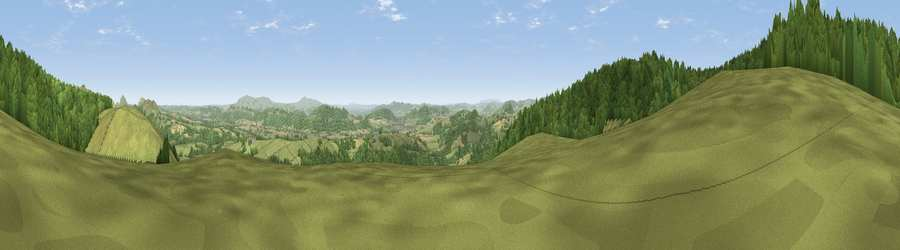

Viewpoint near Asterton
#6130 in England · top 19% of its area beats it · near AstertonThe view, rendered

A 360° render of this exact spot computed from the terrain model, tree cover and land cover — summer colours, afternoon light, calibrated against photographs of famous viewpoints. Real trees, hedges and buildings will differ in detail.
The panorama
Grey silhouette: terrain skyline in each direction (720 bearings, Earth curvature and refraction included). Dashed green: skyline with trees (+15 m) and buildings (+8 m) as obstacles. Blue strip: how far the ground is visible on each bearing.
Where the view opens
Wedge length = distance to the farthest visible ground on that bearing (vegetation-aware). Rings at 10, 25 and 50 km.
What fills the view
49% woodland · 45% grassland · 6% cropland
Angular shares of the visible panorama (visual magnitude), not map area. Landscape diversity 0.38 (0–1 Shannon).
Key numbers
More beautiful places nearby
The staircase of upgrades: each row has a higher view potential than everything closer. Driving times are estimates from straight-line distance, calibrated against real road routing — check an actual route before setting out.
| Place | Direction | Drive | Score |
|---|---|---|---|
| Viewpoint near Asterton | WNW · 1 km | ~3 min | 76.0 |
| Viewpoint near Asterton | W · 1 km | ~4 min | 79.6 |
| Viewpoint near Asterton | WSW · 2 km | ~5 min | 83.0 |
| The Lawley | NE · 12 km | ~22 min | 85.8 |
| Viewpoint near Little Wenlock | NE · 28 km | ~45 min | 86.6 |
| North Hill | SE · 56 km | ~78 min | 86.8 |
| Worcestershire Beacon | SE · 57 km | ~79 min | 87.1 |
| Viewpoint near Bossington | SSW · 149 km | ~172 min | 88.3 |
52.49906, -2.87164 · source: screening · position refined by local search. Computed location — check access rights before visiting.